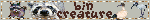
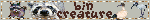
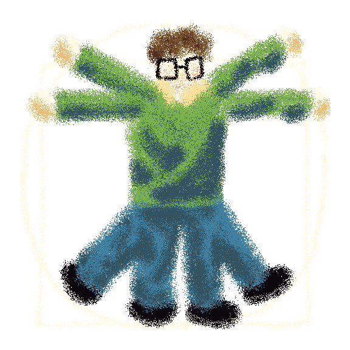
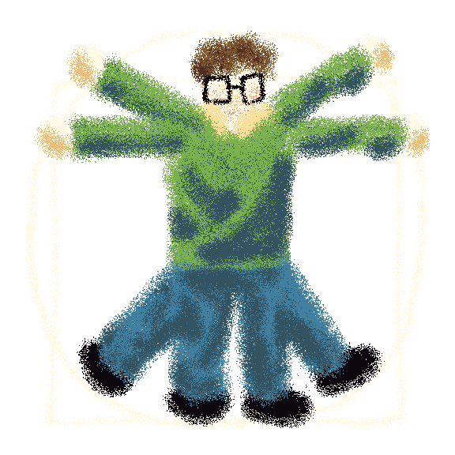

 

me
background
half-british-half-chinese perhaps-a-bit-fruity dude in the uk who is now old enough to drink the funny juice
missing out
despite being born in the 2000s i missed the entirety of the early internet so i thought that this would be a nice way to try and experience it
website
i want this website to be a place i can ramble about my interests, dump my thoughts and document my hobbies
one thing i really don't want to do is add to the pile of linktrees and empty spaces
this should be a place which is completely, absolutely, truly mine
neocities
i initially heard about neocities from a great video about the indie web -
i wholeheartedly agree that the mainstream internet has regressed from what it was and want to be a part of this lovely community
interests
coding
i find coding very therapeutic - my favourite languages are
rust and
c#
i'm crap with html and css lmao
i mostly code for modding
but am also thinking about making my own game
biology
biology is the most interesting science and you can fucking fight me on that
i find the study of life absolutely fascinating, from a molecular to cellular to ecological perspective
games
i adore games and believe they can be an incredible creative medium
my favourite genres are 3D platformers, metroidvanias, puzzle games and exploration games
instruments
i play piano, accordion, violin and 葫芦丝
music
i'm into jazz metal (polyphia), indie folk (the crane wives), 2000s and 2010s pop and soundtracks
food
i'm a sucker for pretty much any food except most fruit (i only really like apples, oranges, grapes and bananas)
obviously i love chinese food - my favourites are 小笼包, 红烧肉, 皮蛋, 北京烤鸭, 粽子, 油条, 冬瓜汤, 包子, 月饼 and 汤圆 (the last three especially with 豆沙 filling)
martial arts
i do taekwondo (black belt) and did kung-fu when i was younger
big believer that gyms are a scam and you can stay healthy without them